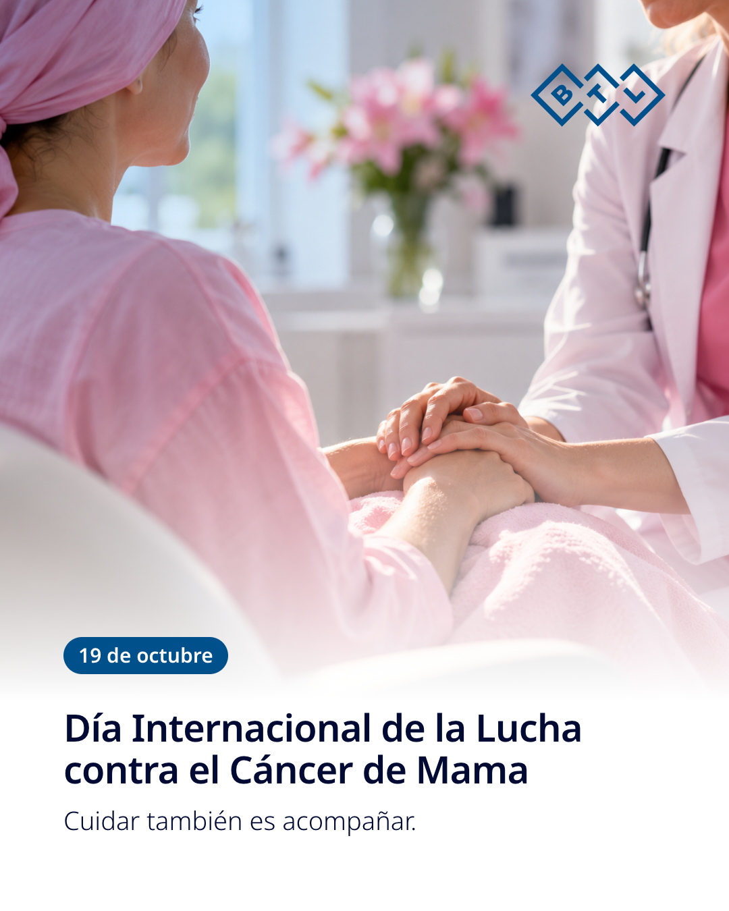

Este 19 de octubre, Día Internacional de la Lucha contra el Cáncer de Mama, nos sumamos a quienes acompañan cada diagnóstico, cada tratamiento y cada paso de la recuperación. Detrás de cada paciente hay un equipo que escucha, sostiene y cuida. A todas las mujeres que enfrentan esta enfermedad, a sus familias y a los profesionales de la salud que están a su lado: gracias por recordarnos que cuidar también es acompañar. BTL El Salvador #CáncerDeMama #19DeOctubre #LazoRosa #Prevención #BTLElSalvador